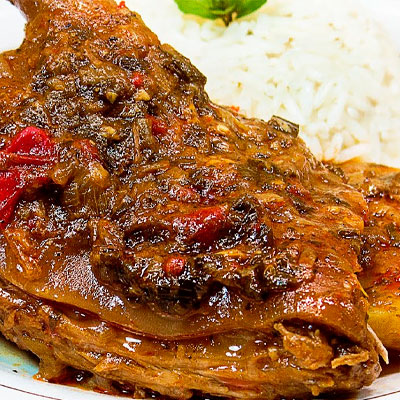
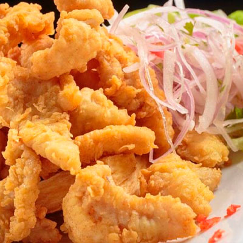

Todos
Sopas

Caldo de Gallina
S/ 15.00

Caldo de Pata de Res
S/ 18.00

Caldo de Carnero
S/ 20.00
Guarniciones

Chita Frita
S/ 35.00

Yuca Frita
S/ 10.00

Papas Doradas
S/ 12.00
Criollos

Arroz con Cabrito
S/ 25.00

Arroz con Pato
S/ 25.00

Cuy Guisado/Frito
S/ 30.00

Frito Trujillano
S/ 25.00
Marinos

Ceviche Pesca del Día
S/ 25.00

Chicharrón Pesca del Día
S/ 25.00

Sudado Pesca del Día
S/ 25.00

Pescado Cabrilla
S/ 30.00

Pescado Suco
S/ 30.00

Pescado Ojo de Uva
S/ 30.00

Pescado Corvina
S/ 35.00
Carnes

Chuleta de Cerdo
S/ 22.00

Chicharrón de Cerdo
S/ 20.00

Hígado Encebollado
S/ 18.00

Churrasco
S/ 30.00

Lomo Saltado
S/ 25.00

Pollo Saltado
S/ 22.00

Pollo a la Plancha
S/ 22.00

Milanesa
S/ 22.00

Chancho al Palo
S/ 30.00
Arroces

Arroz con Mariscos
S/ 28.00

Chaufa de Mariscos
S/ 28.00

Chaufa de Pollo
S/ 22.00

Tallarín Saltado
S/ 22.00